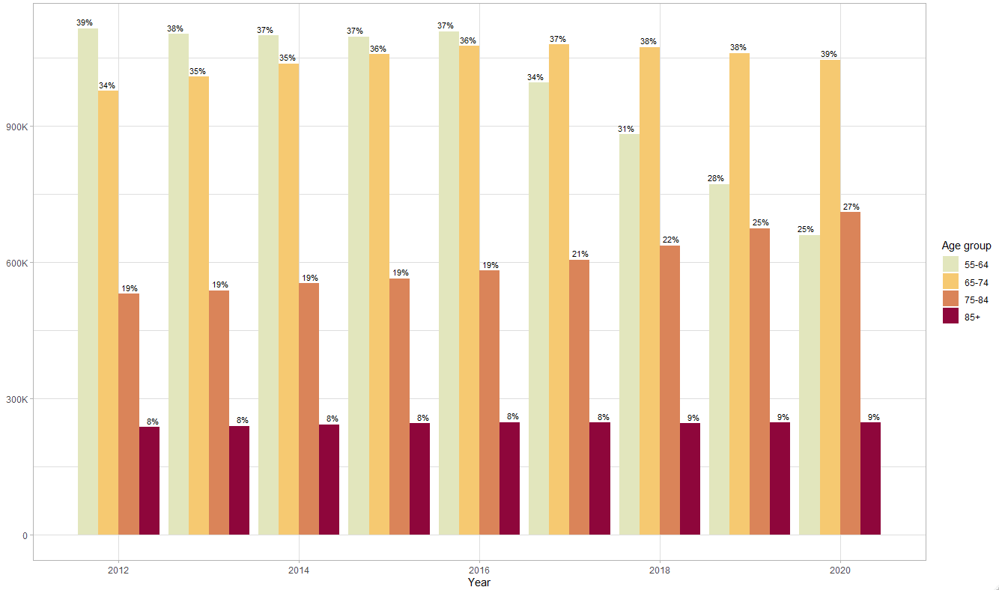
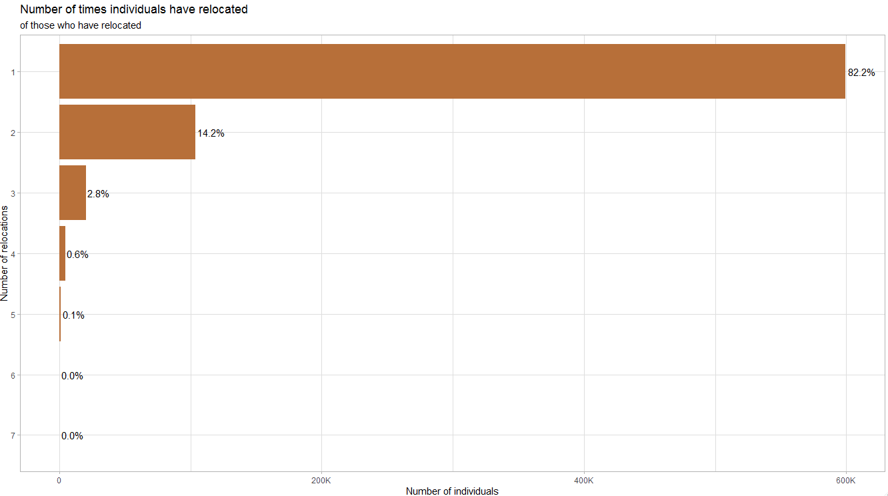

Reloc-Age
1
About
2
Introduction
2.1
Research questions
3
Overview of Registers and Data
3.1
Description of data sets from SCB
3.1.1
Dataset overview
3.1.2
Data cleaning and joining of raw data
3.2
Description of data sets from Socialstyrelesen
3.2.1
Dataset overview
3.2.2
Data cleaning and joining of raw data
4
Exploring data - Individuals
5
ICD codes.
5.1
ICD Code types
5.2
Decoding the codes - matching
5.3
Data cleaning process
6
Exploring data - Housing
6.1
Descriptive statistics
6.2
Specific data considerations
6.2.1
Identifying partners
6.2.2
Recoding varaibles
6.2.3
Indentifying relocations
6.2.4
Indentifying change in kommun
Reloc-Age
4
Exploring data - Individuals

